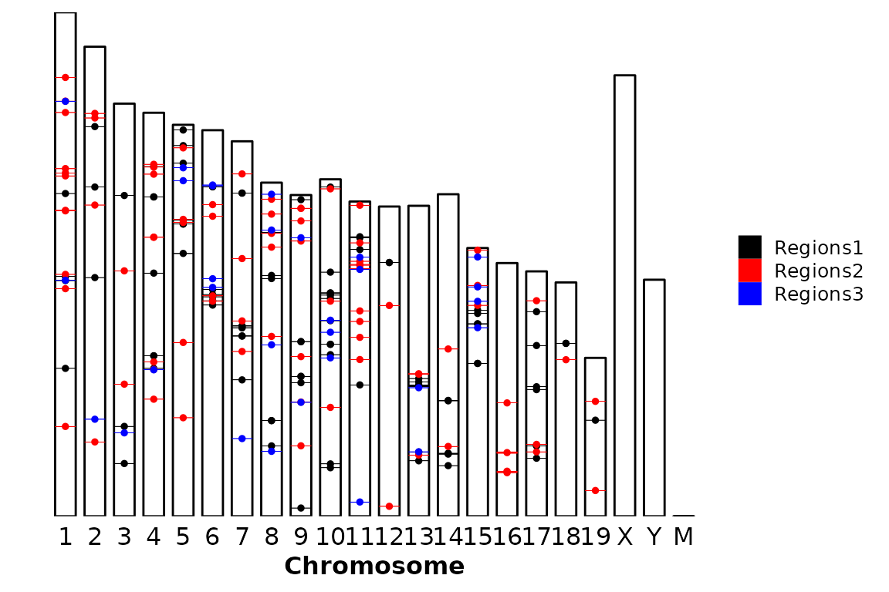

chromRegions()
Adrià Mitjavila Ventura
23 septiembre, 2021
Source:vignettes/11-chromRegions.Rmd
11-chromRegions.Rmd
Run chromRegions()
chromRegions() takes a file with the sizes of the chromosomes and draws a ggplot2-based bar plot. Then takes regions in a BED-like format to draw them into each chromosome. The inputs chrom.sizes and regions can be supplied as path to the file where the information is stored or a data frame.
Required input
chrom_sizes = "../testdata/mm10.chrom.sizes"
chrom_sizes %>% read.delim(header = F) %>% head()## V1 V2
## 1 1 195471971
## 2 10 130694993
## 3 11 122082543
## 4 12 120129022
## 5 13 120421639
## 6 14 124902244
regions = "../testdata/mm10.regions.tsv"
regions %>% read.delim(header = F) %>% head()## V1 V2 V3 V4 V5 V6
## 1 1 34813226 34843022 region1 29796 -
## 2 1 57348975 57377520 region2 28545 -
## 3 1 88258855 88277518 region3 18663 -
## 4 1 91403055 91406029 region4 2974 -
## 5 1 91540015 91559583 region5 19568 +
## 6 1 92992344 92997067 region6 4723 -Default run
The default run requires only the chrom_sizes and the regions arguments, either as a path to a file or a data frame.
chromRegions(chrom_sizes = "../testdata/mm10.chrom.sizes", regions = "../testdata/mm10.regions.tsv")
chrom_sizes = "../testdata/mm10.chrom.sizes"%>% read.delim(header = F)
regions = "../testdata/mm10.regions.tsv" %>% read.delim(header = F)
chromRegions(chrom_sizes = chrom_sizes, regions = regions)
Second set of regions
A second set of regions can be included in the plot. In that case, the default coloring by strand will be removed and the coloring will be done based on the region set.
chromRegions(chrom_sizes = "../testdata/mm10.chrom.sizes",
regions = "../testdata/mm10.regions.tsv",
regions2 = "../testdata/mm10.regions2.tsv")Chromosome order
chromRegions(chrom_sizes = "../testdata/mm10.chrom.sizes",
regions = "../testdata/mm10.regions.tsv",
chr_order = c(1,3,4,2,5,6,7,9,8,19,11,10,12,13,15,14,16,17,18,"X","Y","M", "MT") )
Exclude chromosomes
Very often, the genome assemblies of a lot of species have chromosomes/scaffolds with strange names, which are not nice to plot. These can be excluded using the chr_exlude argument with a vector of regular expressions that match the chromosomes to exclude. By default chr_exclude removes the most usuall strange chromosomes, but if you want to remove more chromosomes or don’t want to remove any, you can change the chr_exclude argument.
An example that excludes all the chromosomes that contain a dot in the name:
chromRegions(chrom_sizes = "../testdata/mm10.chrom.sizes",
regions = "../testdata/mm10.regions.tsv",
chr_exclude = c("\\."))
Here you have an example that does not remove any chromosome.
chromRegions(chrom_sizes = "../testdata/mm10.chrom.sizes",
regions = "../testdata/mm10.regions.tsv",
chr_exclude = c(" ")) Note that, since we are converting the chromosome names to an ordered factor with chr_order, the chromosome names that do not appear in chr_order will be groupped and plotted into a NA category.
Customization
Flip axes
chromRegions() allows flipping the axes by setting the coord_flip argument to TRUE.
chromRegions(chrom_sizes = "../testdata/mm10.chrom.sizes",
regions = "../testdata/mm10.regions.tsv",
coord_flip = T)
Draw the points
By default, chromRegions() draws a line/rectangle and a point in the middle of each region. To avoid drawing the points, the argument draw_points can be set to FALSE.
chromRegions(chrom_sizes = "../testdata/mm10.chrom.sizes",
regions = "../testdata/mm10.regions.tsv",
draw_points = F)
Color
By default, the regions are colored by strand, if the strand column has “+” and “-” as values. This coloring is controlled with strand_color, which must be a character vector with two colors.
chromRegions(chrom_sizes = "../testdata/mm10.chrom.sizes",
regions = "../testdata/mm10.regions.tsv",
strand_color = c("Black", "Yellow")) If you don’t want to color by strand, just turn
If you don’t want to color by strand, just turn strand_color to NULL. In this case, the color of the region will be defined by regions_colors, which must be a character vector with two colors. In case that only one region is supplied (regions argument), only the first color will be used, but if a second set of regions is suppplied (regions2 argument), both values will be used.
chromRegions(chrom_sizes = "../testdata/mm10.chrom.sizes",
regions = "../testdata/mm10.regions.tsv",
strand_color = NULL,
regions_color = c("Gold3", "Darkgreen"))If we supply a second set of regions:
chromRegions(chrom_sizes = "../testdata/mm10.chrom.sizes",
regions = "../testdata/mm10.regions.tsv",
regions2 = "../testdata/mm10.regions2.tsv",
strand_color = NULL,
regions_color = c("Gold3", "Darkgreen")) Now, imagine that we have regions that do not have a defined strand (e.g. most ChIP-seq peaks). In this case, the
Now, imagine that we have regions that do not have a defined strand (e.g. most ChIP-seq peaks). In this case, the strand_color is internally converted to NULL and the regions_colors argument is used to color the regions.
# Read and format regions file
regions_no_strand <- read.delim("../testdata/mm10.regions.tsv", header = F) %>% dplyr::mutate(V6 = ".")
# Draw the plot
chromRegions(chrom_sizes = "../testdata/mm10.chrom.sizes",
regions = regions_no_strand,
strand_color = c("Black", "Red"),
regions_color = c("Gold3", "Darkgreen"))Titles
Title and subtitle can be supplied through the arguments title and subtitle, respectively. By default, they are set to NULL, but can accept a character of length 1.
chromRegions(chrom_sizes = "../testdata/mm10.chrom.sizes",
regions = "../testdata/mm10.regions.tsv",
title = "This is a title",
subtitle = "This is a subtitle")
Also, the labels of the axes can be set or removed through the xlab and ylab arguments. By default, the X axis label is set to “Chromosome” and the Y axis is set to “Position (bp)”, but they can be removed setting the corresponding arguments to NULL or changed to any value.
chromRegions(chrom_sizes = "../testdata/mm10.chrom.sizes",
regions = "../testdata/mm10.regions.tsv",
xlab = NULL,
ylab = NULL) Finally, a caption can be included in the bottom-right corner by setting the
Finally, a caption can be included in the bottom-right corner by setting the caption argument. By default, caption is set to NULL and it can be set to TRUE or any character. If caption is set to a character, whatever is written will be placed in the bottom-right corner. Instead, if it is set to TRUE, what will be written will be the number of regions in the input region sets.
Here there is an example with any character:
chromRegions(chrom_sizes = "../testdata/mm10.chrom.sizes",
regions = "../testdata/mm10.regions.tsv",
caption = "This is a caption")
On the other hand, if caption is set to TRUE, the caption will show the number of regions in the input regions set (regions).
chromRegions(chrom_sizes = "../testdata/mm10.chrom.sizes",
regions = "../testdata/mm10.regions.tsv",
caption = TRUE)
And, if caption is set to true, when two regions2 is also supplied, the number of regions in each region set will be written in the caption.
chromRegions(chrom_sizes = "../testdata/mm10.chrom.sizes",
regions = "../testdata/mm10.regions.tsv",
regions2 = "../testdata/mm10.regions2.tsv",
caption = TRUE)
Legend
The position of the legend is, by default, the bottom of the plot. This can be changed by changing the legend argument to one of “bottom”, “right”, “top”, “left” or “none” (no legend). The legend argument is passed through ggpubr::theme_pubr().
chromRegions(chrom_sizes = "../testdata/mm10.chrom.sizes",
regions = "../testdata/mm10.regions.tsv",
legend = "right")
chromRegions(chrom_sizes = "../testdata/mm10.chrom.sizes",
regions = "../testdata/mm10.regions.tsv",
legend = "none")Further costumization
Since chromRegions() outputs a ggplot2-based bar plot, it can be further customized like any other ggplot2-based plot.